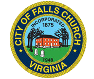

Welcoming Falls Church celebrates the efforts of many like-minded people in the community to welcome immigrants and refugees. Local government authorities; community and civic organizations; churches, synagogues, and mosques; and perhaps most importantly individuals and families who befriend neighbors, acquaintances, classmates, are engaging international residents of our community and making welcoming work.
We are fortunate to live in a community where most residents profess positive sentiments towards immigrants and refugees. The Greater Falls Church area is remarkably diverse, and becoming more so, offering us all everyday opportunities for us to connect with the world, close to home.
Public-Private Collaboration. Welcoming America encourages grassroots organization through public-private partnerships that connect to city or county governments.

Welcoming Falls Church has been delighted to partner with the City of Falls Church since organizing our first activities in 2018. The City Council has recognized Welcoming Week with resolutions in 2018, 2019, 2020, and 2021;
 we have gotten to know many of the City's Parks & Recreation Department colleagues and engaged with the Housing Commission and Human Services Advisory Council as we've planned activities; we have been delighted to collaborate with the Mary Riley Styles Public Library to co-sponsor youth book clubs; and we have even been invited by the City to offer ideas about how the new City Hall might be more welcoming. Many thanks to the City and its welcoming spirit!
we have gotten to know many of the City's Parks & Recreation Department colleagues and engaged with the Housing Commission and Human Services Advisory Council as we've planned activities; we have been delighted to collaborate with the Mary Riley Styles Public Library to co-sponsor youth book clubs; and we have even been invited by the City to offer ideas about how the new City Hall might be more welcoming. Many thanks to the City and its welcoming spirit!
In addition, we look forward to connecting more over time with the Fairfax County authorities. We held a powerful program in September 2019 that featured author Imbolo Mbue at a public talk at Fairfax County's Tysons-Pimmitt Public Library (down the street from where Imbolo Mbue lived, when she was in the area!). We look forward to getting to know counterparts - particularly in the Mason, Dranesville, and Providence Districts of Fairfax County - as we understand and work together to make all of Falls Church a more welcoming community.
Partners. In order to mobilize our community, we're connecting with like-minded organizations and their leaders and members.
We are delighted to have entered into partnerships with the Falls Church City Public Schools (FCCPS) and the Falls Church Education Foundation (FCEF). We thank our FCCPS and FCEF colleagues for collaboration.


In addition, we are delighted to work with four organizations:
Youth & Local PTAs. One highlight of local support was when the 5th grade GIVE Day student ambassadors at Thomas Jefferson Elementary School selected Welcoming Falls Church as their local partner.
 The GIVE Day volunteers - hundreds of kids! - then created a large "mosaic" community art project with a welcoming theme, that they then presented to the City of Falls Church at a City Council meeting. Later, GIVE Day 2022 saw another group of fifth graders organize a children’s book drive, to benefit recently-resettled refugee families. They collected over 1500 books! We are so grateful for those students and their hard work (and to their families)! We love working with local PTAs. What could be more grassroots?
The GIVE Day volunteers - hundreds of kids! - then created a large "mosaic" community art project with a welcoming theme, that they then presented to the City of Falls Church at a City Council meeting. Later, GIVE Day 2022 saw another group of fifth graders organize a children’s book drive, to benefit recently-resettled refugee families. They collected over 1500 books! We are so grateful for those students and their hard work (and to their families)! We love working with local PTAs. What could be more grassroots?
 We can't thank the Falls Church Elementary PTA enough for their development of this great project and willingness to partner with us long-term. Likewise, we thank the Mary Ellen Henderson Middle School for their consistent and enthusiastic support, for their membership's vote to make us a long-term partner, and partnership in hosting Alan Gratz for a Refugee book talk on National Immigrants Day in October 2020.
We can't thank the Falls Church Elementary PTA enough for their development of this great project and willingness to partner with us long-term. Likewise, we thank the Mary Ellen Henderson Middle School for their consistent and enthusiastic support, for their membership's vote to make us a long-term partner, and partnership in hosting Alan Gratz for a Refugee book talk on National Immigrants Day in October 2020.
Media and Podcasts. We recognize how important it is to reach the community through media and podcasts. Local community access network FCCTV filmed author Imbolo Mbue’s Fall 2019 talk, the Falls Church News-Press has written about us (see here), and Falls Church resident Erin Keating has created a great podcast about books, Three Way, that featured Imbolo Mbue’s talk (see here).